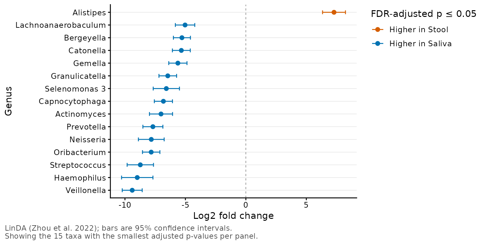
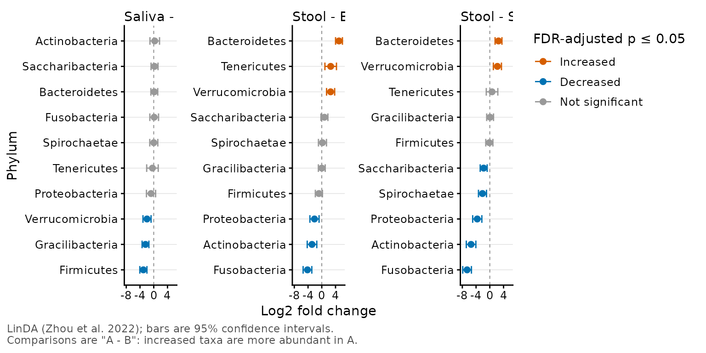

Runs taxa_da() and shows each taxon's log2 fold change as a point with
its confidence interval. Significant taxa are colored by the direction
of the change; the others are gray. Each comparison (and rank and
split.by subset) gets its own panel, with the taxa ordered by fold
change.
Usage
taxa_forest(
biom,
stat.by = NULL,
regr = NULL,
rank = -1,
taxa = NULL,
method = "linda",
covariates = NULL,
split.by = NULL,
strata = NULL,
p.top = 20,
p.sig = 0.05,
colors = TRUE,
caption = TRUE,
prev.cut = 0.1,
level = 0.95,
p.adj = "fdr",
lineage = FALSE,
unc = "singly",
...
)Arguments
- biom
An rbiom object, or any value accepted by
as_rbiom().- stat.by
Dataset field with the groups to compare. Must be categorical. Each pair of groups is compared, in the order of the field's levels: with levels
A,B, andC, the comparisons are"B - A","C - A", and"C - B", and a positive log fold change means the taxon is more abundant in the first-named group. Give eitherstat.byorregr, not both. Default:NULL- regr
Dataset field with a numeric variable. The log fold change is then per unit increase in
regr. Give eitherstat.byorregr, not both. Default:NULL- rank
What rank(s) of taxa to test. E.g.
"Phylum","Genus",".otu", etc. An integer vector can also be given, where1is the highest rank,-1is the lowest rank, and0is the OTU "rank". Each rank is analyzed separately. Default:-1- taxa
Which taxa to report. An integer value reports the top n most abundant taxa, a value 0 <= n < 1 reports the taxa with that mean relative abundance or greater, and a character vector reports the named taxa. Every taxon that passes
prev.cutis still part of the analysis, since LinDA estimates the compositional bias from all of them, and p-values are adjusted for all of them. Default:NULL(all tested taxa).- method
The differential abundance method. Currently only
"linda". See Details. Default:"linda"- covariates
Dataset field(s) to adjust for, such as age or antibiotic use. They are included in every model, but their own effects are not reported. Default:
NULL- split.by
Dataset field(s) that the samples should be split by. Each subset is analyzed separately. Must be categorical. Default:
NULL- strata
Dataset field with a blocking variable, such as a subject identifier for repeated measures. Must be categorical. Adds a random intercept per stratum to every model, fitted as linear mixed models with
lmerTest::lmer()(requires the lmerTest package). Default:NULL- p.top
Which taxa to show in each panel. A value >= 1 shows the
p.toptaxa with the smallest adjusted p-values; a value < 1 shows the taxa with an adjusted p-value <=p.top;Infshows every tested taxon. Default:20- p.sig
Taxa with an adjusted p-value <=
p.sigare significant and colored by the direction of the change. Default:0.05- colors
Colors for significant taxa that are more abundant in the first-named group of the comparison (or that increase with
regr), for those that are less abundant (or decrease), and for taxa that aren't significant, in that order. Two colors use the default gray for the third.TRUEuses vermillion, blue, and gray; a palette name (e.g."okabe") uses its first two colors;FALSEdraws everything in black. Default:TRUE- caption
Add a caption describing the method, the intervals, and which taxa are shown. Default:
TRUE- prev.cut
Prevalence filter: taxa found in fewer than this proportion of the samples are not tested. Default:
0.1- level
The confidence level for the confidence intervals (
.lowerand.upper). Default:0.95- p.adj
Method to use for multiple comparisons adjustment of p-values. Run
p.adjust.methodsfor a list of available options. As is standard for differential abundance, p-values are adjusted across taxa separately for each comparison (and each rank andsplit.bysubset). Default:"fdr"- lineage
Include all ranks in the name of the taxa. For instance, setting to
TRUEwill produceBacteria; Actinobacteria; Coriobacteriia; Coriobacteriales. Otherwise the taxa name will simply beCoriobacteriales. You want to set this to TRUE whenunc = "asis"and you have taxa names (such as Incertae_Sedis) that map to multiple higher level ranks. Default:FALSE- unc
How to handle unclassified, uncultured, and similarly ambiguous taxa names. Options are:
"singly"-Replaces them with the OTU name.
"grouped"-Replaces them with a higher rank's name.
"drop"-Excludes them from the result.
"asis"-To not check/modify any taxa names.
Abbreviations are allowed. Default:
"singly"- ...
Parameters for the underlying ggplot2 functions. Prefix a parameter with a layer name to pass it to that layer only:
point.(ggplot2::geom_point()),ci.(ggplot2::geom_errorbar(); e.g.ci.width = 0for no caps),zero.(theggplot2::geom_vline()at zero),facet.,labs.,xaxis.,yaxis., andtheme.. An argument that no layer accepts is an error.
Value
A ggplot2 plot. The computed data points and ggplot
command are available as $data and $code,
respectively.
Details
The statistics are those of taxa_da(), which is called with the same
arguments; they are available as $stats, and the code that reproduces
the plot as $code. Each panel shows its own taxa (p.top), so the
y-axes are independent. To keep a taxon's position unique within its
panel, the plotted y values are the row number and taxon name (e.g.
"12-Bacteroides"); the axis labels drop the row number.
See also
taxa_da() for the statistics.
Other taxa_abundance:
sample_sums(),
taxa_boxplot(),
taxa_clusters(),
taxa_corrplot(),
taxa_da(),
taxa_heatmap(),
taxa_stacked(),
taxa_stats(),
taxa_sums(),
taxa_table()
Other visualization:
adiv_boxplot(),
adiv_corrplot(),
bdiv_boxplot(),
bdiv_corrplot(),
bdiv_heatmap(),
bdiv_ord_plot(),
plot_heatmap(),
rare_corrplot(),
rare_multiplot(),
rare_stacked(),
stats_boxplot(),
stats_corrplot(),
taxa_boxplot(),
taxa_corrplot(),
taxa_heatmap(),
taxa_stacked(),
theme_rbiom()
Examples
library(rbiom)
biom <- subset(hmp50, `Body Site` %in% c("Saliva", "Stool"))
taxa_forest(biom, stat.by = "Body Site", rank = "Genus", p.top = 15)

biom <- subset(hmp50, `Body Site` %in% c("Saliva", "Stool", "Buccal mucosa"))
taxa_forest(biom, stat.by = "Body Site", rank = "Phylum", p.top = Inf)
